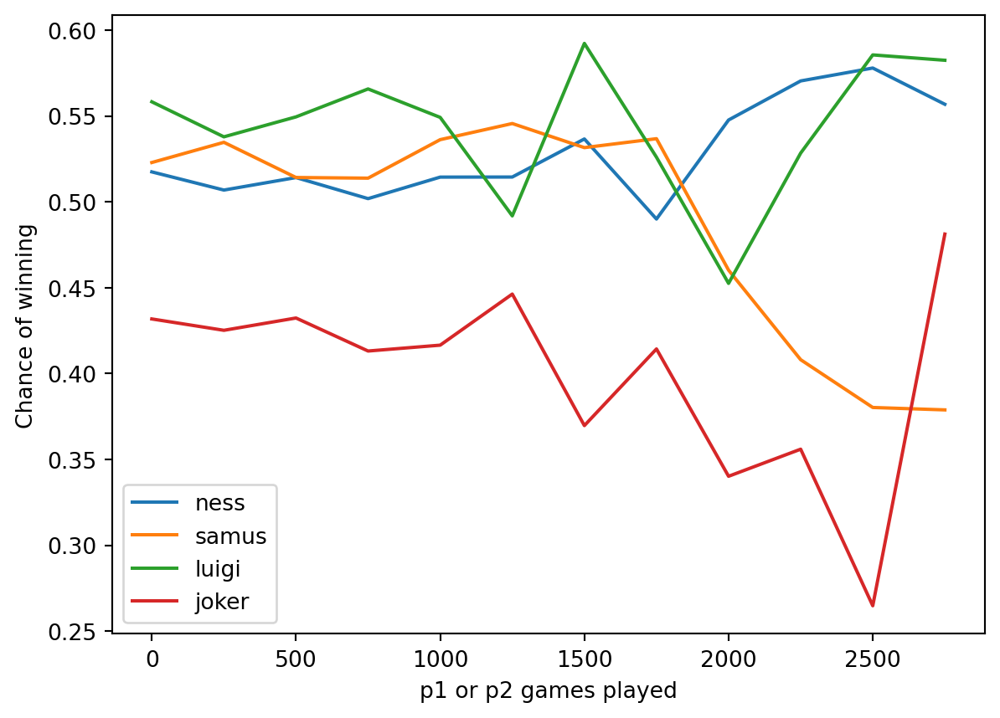
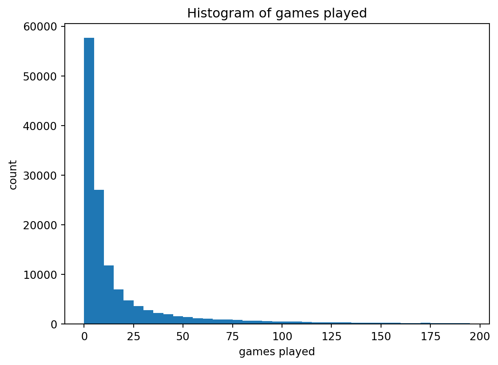
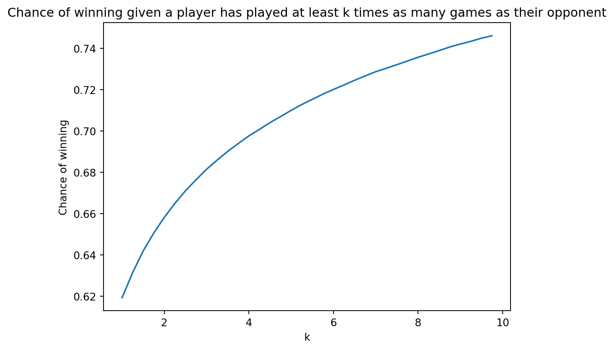

Code
import pandas as pd
import numpy as np
import matplotlib.pyplot as plt
import random
game_df = pd.read_csv("../Data/data/clean_game_data.csv")
skill_data = pd.read_csv("../Data/data/dependent_skill_data.csv")Super Smash Bros. Ultimate is the latest installment of Super Smash Bros., a series of competitive multiplayer games by Nintendo. In Super Smash Bros., players pick from a roster of Nintendo characters and duke it out on a 2D platformer-esque stage. In Smash Ultimate, the roster features 87 unique characters, which, in a 2-player game, makes 7569 total match ups. Each character has different fighting stats and abilities, so each match up is unique.
I want to be able to predict the outcome of a match given character data and information about the skill level of the players. I think it will be interesting to see if certain characters are better or worse at different skill levels, and if the stage data is meaningful or makes no difference.
I sourced my data from smashdata.gg through their Github. The file I downloaded was ultimate_player_database.zip.
Fortunately, smashdata.gg provides us with some insight on why some data is missing and how it has been handled. They say, “A lot of tournaments also don’t report full data, meaning game counts and character data have been lost.” Character data is our primary focus, but it seems that this is not dependent on the values themselves, just the tournaments they come from. This means we can assume missing data is missing completely at random, meaning it is not dependent of the values themselves nor any other values in the dataset. I’ve decided to remove all the rows where game data is completely absent. If the game data is present but the character data is absent, then I filled in the value for character with -1, indicating this absence.
The data from smashdata.gg first needs to be cleaned in order to be used for modeling.
This codebook identifies each of the variables in cleaned_game_data.csv.
| Variable | Description |
|---|---|
p1_id |
A string identifying the first player. |
p2_id |
A string identifying the second player. |
p1_games_played |
An integer indicating how many games the first player has played in dependent_skill_data.csv. |
p2_games_played |
An integer indicating how many games the second player has played in dependent_skill_data.csv. |
p1_games_won |
An integer indicating how many games the first player has won in dependent_skill_data.csv. |
p1_games_won |
An integer indicating how many games the second player has won in dependent_skill_data.csv. |
p1_char |
A string indicating the character of the first player. |
p2_char |
A string indicating the character of the second player. |
stage |
A string identifying the stage the match was played on. |
p1_won |
A boolean indicating if the first player won. |
First, let’s load our data in.
import pandas as pd
import numpy as np
import matplotlib.pyplot as plt
import random
game_df = pd.read_csv("../Data/data/clean_game_data.csv")
skill_data = pd.read_csv("../Data/data/dependent_skill_data.csv")Firstly, I want to establish that games played may be a good indicator of skill. To do this, I’ll ask the question: How likely are you to beat someone who has played at least k times as many games as you?
Let’s write some code to figure this out.
def k_times_more_games_win_rate(k, df = game_df):
return( (
len(df[(df["p1_won"] == True) & (df["p1_games_played"] > k*df["p2_games_played"])]) +
len(df[(df["p1_won"] == False) & (df["p2_games_played"] > k*df["p1_games_played"])])
) /
(
len(df[(df["p1_games_played"] > k*df["p2_games_played"])]) +
len(df[(df["p2_games_played"] > k*df["p1_games_played"])])
)
)
graph = [k_times_more_games_win_rate(n/4) for n in range(4,40)]
plt.plot([(n/4) for n in range(4,40)],graph)
plt.xlabel("k")
plt.ylabel("Chance of winning")
plt.title("Chance of winning given a player has played at least k times as many games as their opponent")
plt.show()
print(k_times_more_games_win_rate(1))
0.6192630428086423This graph justifies the belief that games played is a metric of skill level, because someone with more games played has a higher chance of winning.
I suspect that character win rate might change depending on how skilled a player is. For example, maybe kirby is a really good character until you get to a certain level, at which point they are less viable.
Let’s define some functions that will help us graph win chance against games played.
def win_percent(df):
return (df[df["p1_won"] == True]["p1_char"].value_counts() + df[df["p1_won"] == False]["p2_char"].value_counts()) / \
(df["p2_char"].value_counts() + df["p1_char"].value_counts())
def level_win_percent(df,level,step):
return win_percent(df[
(
(df["p1_games_played"] >= level) &
(df["p1_games_played"] < level + step)
) | (
(df["p2_games_played"] >= level) &
(df["p2_games_played"] < level + step)
)
]).sort_values(ascending=False)
def chargraph(characters, start = 0, stop = 1000, step = 50, df = game_df):
if type(characters) == str:
characters = [characters]
graph = {char : list() for char in characters}
for k in range(start,stop,step):
LWP = level_win_percent(df,k,step)
for char in characters:
if char in LWP.index:
graph[char].append(LWP[char])
else:
graph[char].append(np.NaN)
for key in graph.keys():
output, = plt.plot(range(start,stop,step), graph[key], label = key)
plt.legend()
plt.xlabel("p1 or p2 games played")
plt.ylabel("Chance of winning")
return outputAnd now let’s plot some of these graphs.
chargraph(["ness","samus","luigi","joker"],stop = 3000, step = 250)
plt.show()
We see that the variance of these lines increases with games played, likely because there are less players with many games played. We can decipher some trends in these lines visually, like how the mean of Ness and Luigi’s win rate stays relatively constant, though the mean of Joker and Samus’s seem to decrease. This supports our hypothesis that win percent is not constant with respect to skill.
Let’s verify that there are less players with many games played.
df1 = skill_data[["p1_id","p1_games_played"]].rename(columns = {"p1_id" : "player_id","p1_games_played" : "player_games_played"})
df2 = skill_data[["p2_id","p2_games_played"]].rename(columns = {"p2_id" : "player_id","p2_games_played" : "player_games_played"})
player_games_played_df = df1.append(df2,ignore_index = True).astype({"player_id" : "string", "player_games_played" : "int32"}).drop_duplicates(ignore_index=True).sort_values("player_games_played").reset_index(drop=True)
plt.hist(player_games_played_df["player_games_played"].to_list(),bins=range(0,200,5))
plt.title("Histogram of games played")
plt.ylabel("count")
plt.xlabel("games played")
plt.show()
#plt.hist(player_games_played_df[player_games_played_df["player_games_played"] >= 200]["player_games_played"].to_list(),bins=range(200,2000,50))
#plt.show() - has same 1/x graph
We can see that there are far less players with many games played than with few games played.
Finally, I want to look at how the win percents of a matchup of two characters changes with respect to games played.
I’ll modify our previous functions and plot a graph of the win ratios of pikachu versus ganondorf.
def vs_df(char1, char2):
return game_df[((game_df["p1_char"] == char1) & (game_df["p2_char"] == char2)) |
((game_df["p2_char"] == char1) & (game_df["p1_char"] == char2))]
def vsgraph(char1, char2, start = 0, stop = 1500, step = 250):
chargraph(char1,df=vs_df(char1,char2),start=start, stop=stop, step=step).set_label(char1 + " win percentage vs " + char2)
plt.legend()
vsgraph("pikachu","ganondorf")
vsgraph("ganondorf","pikachu")
Again, we see that the win percentage changes as a function of the skill level of the players.
We’ve now gathered sufficient information about the relationships between our variables, and have a better idea about which models we can use for fitting our data. It seems as though games played and games won will likely fit a logistic regression, but other variables such as the character data might be need more flexible models.